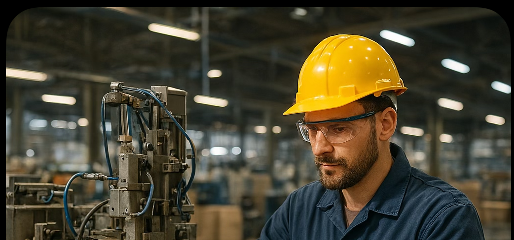
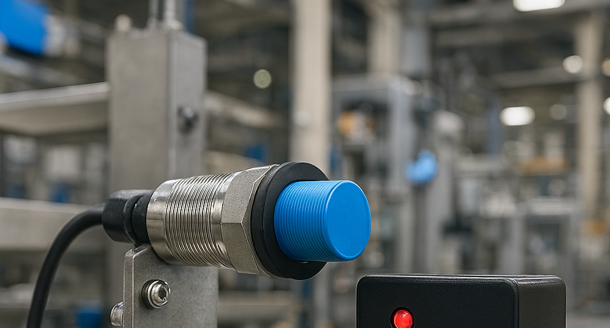
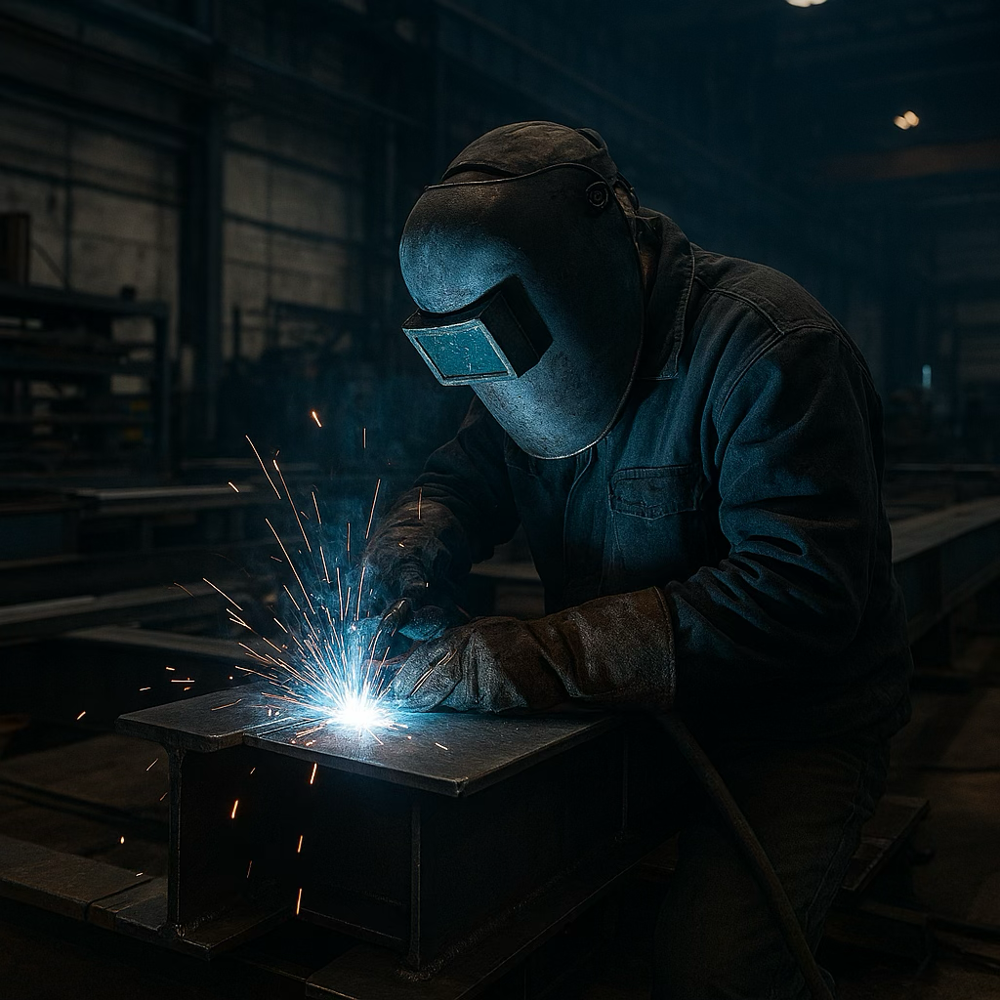

News and case studies from the plant floor
Product updates, engineering deep dives, and real deployment results from teams running Synchronix in production.
 Case Study
Case Study
How a Midwest auto parts plant cut unplanned downtime by 41%
After mirroring three stamping lines, the plant's maintenance team moved from reactive repairs to a predicted-failure queue — and stopped losing entire shifts to surprise breakdowns.
Read the full case study →
Synchronix launches physics-informed drift correction v2
Faster convergence when a machine's real behavior starts to diverge from its baseline model.
Read more →.png)
Beverage bottler avoids a full line failure with 4-day early warning
A slow bearing wear pattern surfaced in the twin's vibration model well before any audible symptom appeared.
Read more →.png)
Packaging manufacturer reduces changeover testing time by 60%
Engineers now validate new product configurations against the twin instead of running trial batches on the live line.
Read more →
Synchronix named to this year's Industrial AI Watchlist
Recognized for closed-loop optimization deployed across multi-site manufacturing operations.
Read more →
Steel fabricator scales from 1 pilot line to 14 mirrored assets
What started as a single conveyor pilot became a plant-wide rollout within eight months.
Read more →
New OPC-UA connector cuts onboarding time to under 3 days
Direct historian ingestion means fewer custom scripts for teams already running Ignition or Wonderware.
Read more →Get new case studies in your inbox
One email a month. No sales pitches — just what's actually working on real plant floors.